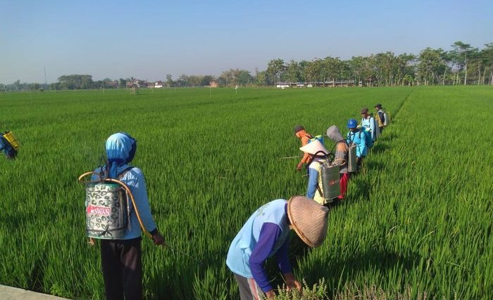
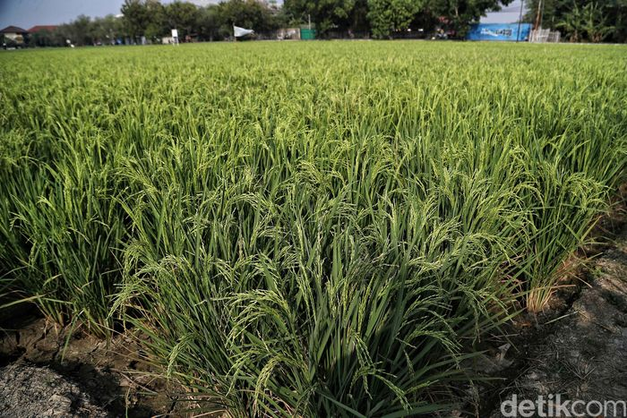
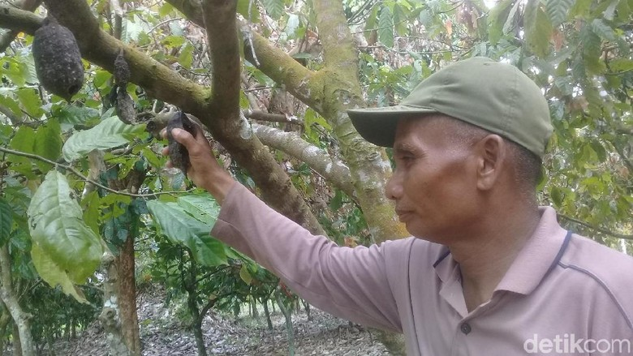

Berkat Teknologi Ini, Jeruk Petani Bisa Dipanen Sepanjang Tahun
Bagi and penikmat jeruk lokal, kerinduan untuk menikmati dan menghadirkannya di meja makan tidak perlu menunggu pertengahan tahun atau musim tiba. Balai Penelitian dan Pengembangan Kementerian Pertanian (Kementan) menemukan teknologi baru agar si bundar manis-asam ini hadir sepanjang tahun. Adalah Bujang Seta, sebuah teknologi dengan nama panjang......
baca selengkapnya >>>>>>

Lada, cengkeh dan pala sedang booming
Saat ini tiga komoditas rempah sedang naik daun yaitu lada, pala dan cengkeh. Balai Penelitian Tanaman Rempah dan Obat (Balittro), Pusat Penelitian Perkebunan, Badan Penelitian dan Pengembangan Pertanian menjadikan tiga komoditas ini sebagai prioritas utama program-program penelitian. Agus Wahyudi, Kepala Balittro menyatakan.........
baca selengkapnya >>>>>>

2 Hektare Tanaman Kakao di Jambi Diserang Ulat, 1.500 Batang Pohon Busuk
Sebanyak 2 hektare lahan tanaman kakao atau cokelat di Desa Gedong Karya, Kecamatan Kumpe, Kabupaten Muaro Jambi, diserang hama ulat. Perkebunan kakao di desa itu kini gagal panen."Ada 1.500 batang coklat yang terkena hama ulat itu. Akibatnya, buahnya pada membusuk. Dengan kejadian ini, saya mengalami kerugian hampir Rp 11 juta,".....
baca selengkapnya >>>>>>